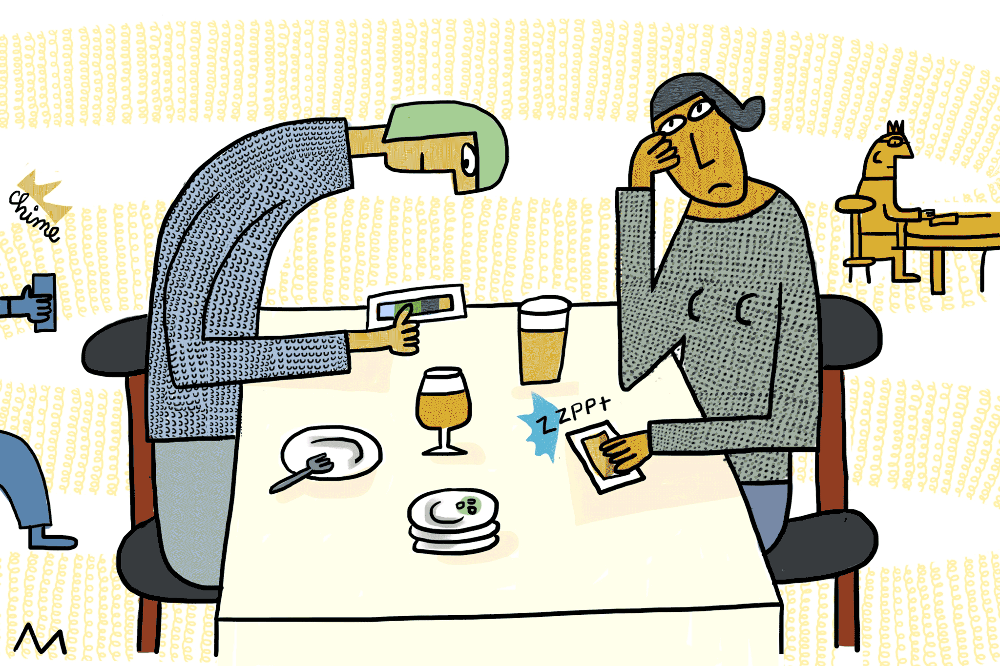

¿QUE ES EL USO EXCESIVO?
La utilización excesiva de teléfonos inteligentes, a menudo denominada adicción al teléfono o usoproblemático de este,se diagnosticamediante laevaluación de ciertos
criterios y comportamientos que indican un patrón problemático de utilización.
No obstante, es importante destacar que no está oficialmente reconocida como un trastornoclínico en la Clasificación
Internacional deEnfermedades (International StatisticalClassification of Diseases and Related Health Problems, ICD, en inglés) o
en el Manual Diagnóstico y Estadístico de los Trastornos Mentales.
algunos de estos criterios incluyen la pérdida de control, donde la persona experimenta dificultades para regular el tiempo dedicado al uso del teléfono, a pesar de los
intentosde reducirlo. Además, experimentan preocupación excesiva, y el uso del dispositivo se convierteen una preocupación central en la vida del individuo, afectando
otras áreasimportantes, como el trabajo, las relaciones personales o actividades diarias.asimismo consecuencias negativas para la salud mental, el bienestar emocional,
rendimiento académicoo laboral, o relaciones interpersonales. Y por ultimo, aunque no menos importante, un alto grado de dependencia emocional. Pues la persona
comienza experimentar síntomas de abstinencia, ansiedad o irritabilidad cuando no puede usar el teléfono, y recurre al dispositivo para aliviar dichos síntomas. En casos
extremos, se habla de nomofobia, la cual significa miedo o angustia incontrolable a estar sin el celular.

|